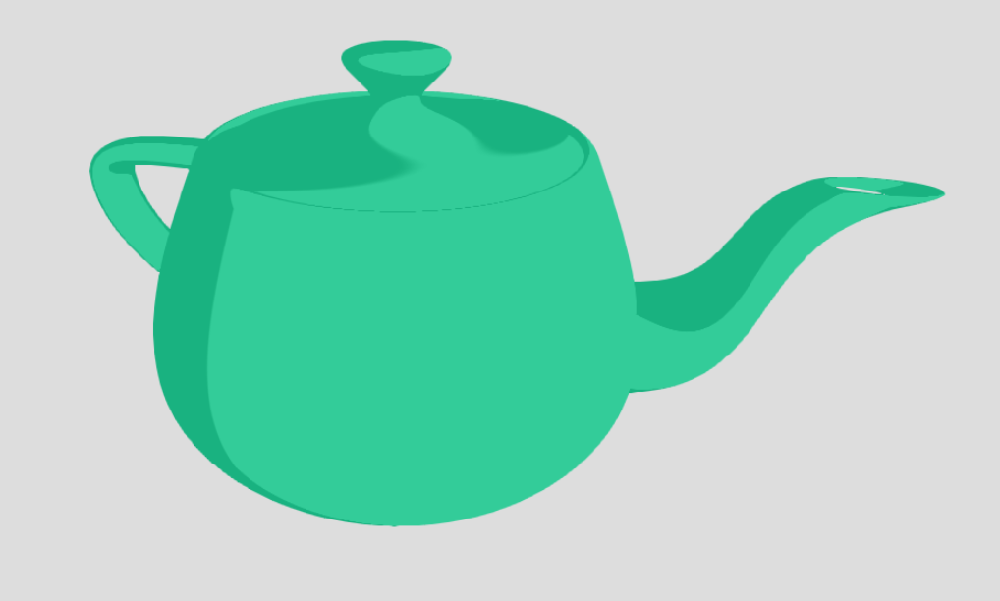
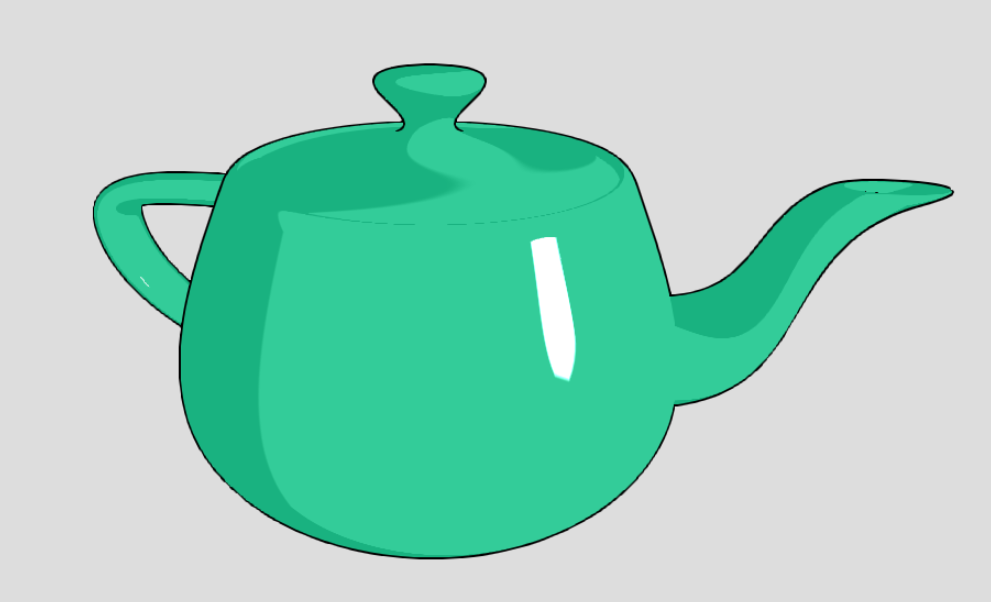
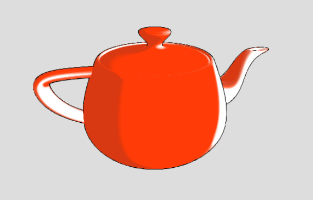
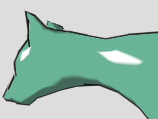
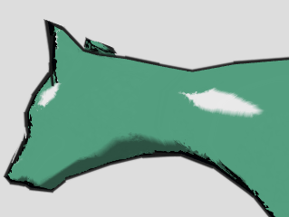
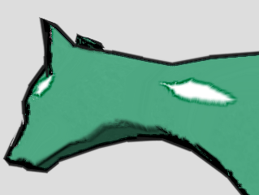

The goal of this project was to implement shading techniques that allow for the rendering of non-photorealistic images based on 3D models. Though sharing the general approach of the photorealistic shading techniques we implemented in project 3-2, some subtle adjustments to these techniques are required to render images in a deliberately unrealistic, cartoonish style. This is desirable in several settings of computer graphics, particularly in cartoon and video game animation. We implemented a basic cel shading routine and an extension thereof—X-toon shading. This involves adding a dimension to our previously one-dimensional texture map; instead of assigning color exclusively based on the diffuse term of the Blinn-Phong model, we add an axis of "detail" (commonly a function of distance) such that at greater detail, there is greater differentiation of color, and at the lowest detail, there is no differentiation of color. Having implemented an X-toon shading routine, we could then extend that to give objects the appearance of being watercolor painted by using a suitable 2D texture map.
WebGL Demo Presentation SlidesWe start with the same raw materials as the shader programs implemented in project 3-2, i.e. a 3D mesh object from which we can extract information about surface normals, proximity to the camera and light sources, and so on. We can use this data to inform our simple cel shader in a way similar to before, though with some modifications, which will be detailed in this section. First, to compute the diffuse reflection of a point on the surface of the object, we first consider the Blinn-Phong model:
$$L = k_{a}I_{a} + k_{d}\left(\frac{I}{r^2}\right)max\left(0, \bf{n \cdot l }\right) + k_{s}\left(\frac{I}{r^2}\right)max\left(0, \bf{n \cdot h} \right)^{p}$$In this shader, the diffuse term of the above is used to assign the point in question to one of two "buckets" of shades of the same color. In other words, before we compute anything, we decide on the color we would like the object to have, then compute the diffuse term given the desired point, and depending on which range of values this term occupies, the point is imbued with the corresponding shade. We discretize the shades because it mimics the desired aesthetic; in hand-drawn cartoon images, the parts of an object further from the light source are often drawn in a darker shade of the same color as the rest of the object.
|  |  |
The following image is the result of our renderer after this stage of shading, that is, after the calculation of diffuse terms and assignments to color buckets.
We consider now specular reflection. In the spirit of discretization, we mimic this effect by setting a threshold minimum value of the specular term for which specular reflection occurs. If the specular term as computed in the Blinn-Phong model is greater than or equal to this threshold value, specular reflection occurs and the proper points are shaded a bright white. This threshold value is determined empirically. We see the results of adding this to the previous render:
Our render so far, while having the desired colors, seems flat, especially in a still image. We resolve this by adding a black outline to the edges of the object. To do this, however, we need the program to be able to detect edges to begin with. If the normal vector of a point on the object is close enough to orthogonal to the camera direction (the exact margin for error is again determined empirically), we consider the point to be on an edge of the object, apply a small perturbation to the point in the direction of its normal, and fill the resulting gap with a black outline of appropriate thickness. The complete routine gives us this as the final image:
Now that we have implemented a simple cel shader, we can add another dimension of "detail" to our texture space. Our simple cel shader did the equivalent of sampling from a 1-D texture using the diffuse component of the Blinn-Phong model. With X-Toon shading, we sample from a 2-D texture using the same diffuse component for one of the dimensions and a second detail dimension. Commonly a function of distance, detail gives us greater control over the contrast of the various parts of an object which, for our purposes, roughly translates to the parts of an object further from the camera being shaded differently than parts closer to it. An example of such a texture map is shown below:
Notice how the buckets of color are computed using the diffuse term of the Blinn-Phong model as before, but in this case we allow for gradation along the color dictated by these buckets such that at the lowest detail all points are imbued with the same shade of a component color of our original buckets. Adding this axis allows us to more accurately simulate the way in which cartoon images are often drawn, where differences in color in the forefront of the scene are more apparent, whereas the background of a scene tends to blend together. Here is an image of the texture above applied to our favorite rabbit:

This method of shading can also be used to achieve other effects, such as a backlit effect as pictured here:
|

|
|
One interesting usage of cel-shading is with watercolor shading. The algorithm we used involved three shader passes, the first of which is simply the X-Toon shader described earlier with outline drawing. The second pass uses a paper texture to displace the colors of the first pass. Finally, the third pass uses sobel edge-detection to selectively darken the edges of the image.
One of the changes we made to the original algorithm was to use X-Toon shading rather than simply sampling a 1-D texture based on the dot-product of the normal and the light direction. This gives us all the benefits of X-Toon shading and can be done without having to modify the shaders for any of the later passes.
The second pass requires an input texture that will be used as the granularity map to simulate the paper that our watercolor is being painted on. When water comes into contact with paper it is not absorbed by the paper isotropically. The pigment will flow through the ridges and valleys of the paper and be absorbed unevenly. This leads to the graininess that is characteristic of watercolor paintings. We can simulate this by using a paper texture to displace the colors produced by the first pass.
$$uv_{disp} = {uv_{orig} + ((paper_{xy}[uv_{orig}] - M/2) * D)}$$The color of fragments processed by the second fragment shader then becomes the color sampled from the first-pass framebuffer using \(uv_{disp}\) subtracted by the value sampled from the paper texture scaled by the granularity weight \(G\).
$$color_2[uv] = color_1[uv_{disp}] - (paper_{rgb}[uv_{orig}] * G)$$One of key characteristics of watercolor paintings is edge-darkening that occurs when wet watercolor flows out of the paintbrush and pools at the edges of each brushstroke. This effect can be achieved by using a sobel filter to selectively darken areas where there is a color change.
$$color_3[uv] = (color_2[uv] * W) - (paper_{rgb}[uv_{orig}] * P) - (color_{sobel}[uv] * S)$$To calculate \(color_{sobel}\) we apply the vertical and horizontal sobel filter and the vertical sobel filter to the output framebuffer of the second pass and then average the absolute value of the two filtered framebuffers.
|
\(\begin{bmatrix} 1& 0& -1\\ 2& 0& -2\\ 1& 0& -1 \end{bmatrix}\)
|
\(\begin{bmatrix} 1& 2& 1\\ 0& 0& 0\\ -1& -2& -1 \end{bmatrix}\)
|
|  |  |  |
The biggest challenges with this project were learning WebGL and working around the limitations of vertex/fragment shaders. The watercolor shader was especially challenging because it requires multiple passes and reading from the framebuffer. We initially tried to implement the watercolor shader in a single pass but quickly ran into problems when trying to displace colors or apply sobel filters. We went through a lot headache trying to find a way to read the values of neighbor pixels to no avail. Another big challenge was debugging. We did not know how to use any of the available OpenGL debugging tools with our WebGL renderer so we resorted to using shaders to visually debug our program. We wrote shaders that would color our renders according to values like normal direction, screen coordinates, or depth in order to visually whether our calculated values were correct. This was a very time consuming way to debug, but it allowed us to very quickly determine whether something was wrong.
The biggest lesson that we learned was that shader programs are very limited. Fragments and vertices have little to now information about any of their neighbors and are all processed in isolation. We learned about what is and is not possible with shader programs and what kinds of workloads need to be done in pre/post processing. We also learned a lot about how to effectively debugging shaders.
We used the project 3-2 webGL renderer as a starting point for this project.
Wikipedia article on cel shading Wikibooks article on toon shading Giant Bomb article on cel shading Advanced Real-Time Cel Shading Techniques in OpenGL by Adam Hutchins and Sean Kim The Cel Shading Technique by Raul Reyes Luque X-Toon: An Extended Toon Shader by Pascal Barla, Joelle Thollot, and Lee Markosian Real-Time Rendering of Watercolor Effects for Virtual Environments by Eugene Lei and Chun-Fa Chang Hardware-Determined Feature Edges by Morgan McGuire and John F. Hughes